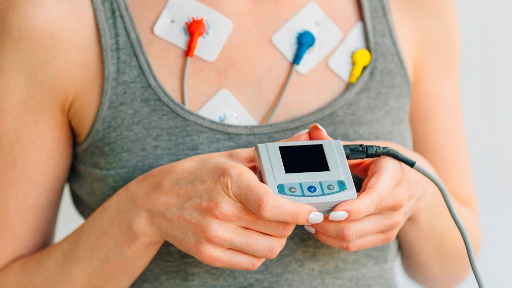

holter 24 horas
O Holter 24 horas é um exame importante para monitorar a atividade elétrica do coração ao longo de
um dia inteiro. Com um dispositivo portátil, o exame registra continuamente os batimentos cardíacos,
permitindo identificar irregularidades no ritmo, como arritmias, que podem não ser detectadas em um
exame de curta duração. Esse monitoramento constante oferece uma visão detalhada do funcionamento
cardíaco durante as atividades diárias do paciente.
